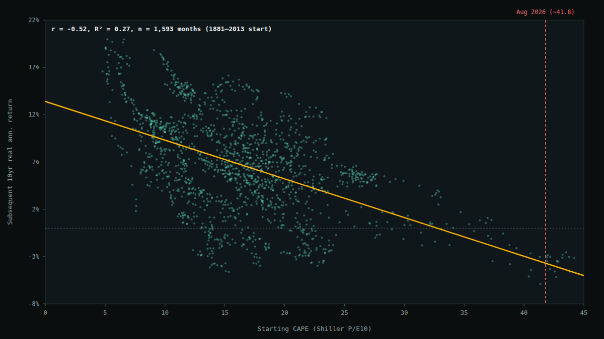
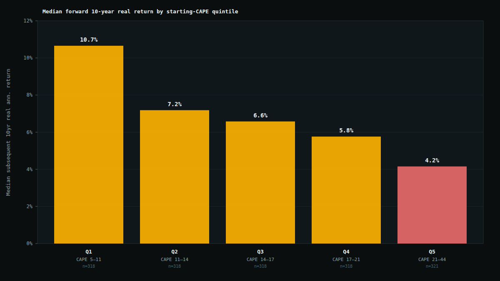

Does a High CAPE Ratio Predict Weak 10-Year Returns? A 140-Year Test
The S&P 500's Shiller CAPE ratio (cyclically-adjusted price-to-earnings, sometimes called P/E10) is sitting around 41–42 as of August 2026, according to the public trackers that update it. That level has been reached exactly once before in the ratio's history — at the tail end of the dot-com bubble in 1999–2000 — and it sits well above where the market traded ahead of both the 1929 crash (CAPE around 32) and the 2007 financial crisis (around 27). Whenever the ratio gets stretched like this, the same claim resurfaces everywhere from financial media to Bogleheads threads to fintwit: a high starting CAPE means investors should expect weak returns over the next decade. It's a specific, testable claim, not just a vibe, so I tested it against the same 150-year dataset I used for the leverage backtest.
Short version: the historical relationship is real, not folklore — starting valuation explains a meaningful chunk of what happens to 10-year forward returns, and the size of the effect is large enough to matter. But the sample size at today's extreme is thinner than the headline numbers suggest, and the one time in history CAPE got this high, the market kept rising for nearly two more years before the reckoning came.
Methodology
I used the same source as the leverage post: Robert Shiller's monthly S&P 500 dataset (mirrored as CSV by datasets/s-and-p-500 on GitHub), which includes a pre-computed PE10 column — price divided by the trailing 10-year average of real (inflation-adjusted) earnings, i.e. the CAPE ratio itself. In this mirror, dividend, earnings, and CPI data are reliably populated from January 1871 through June 2023; PE10 is computable from January 1881 onward, once 10 years of trailing earnings exist.
For every month with a valid starting CAPE reading, I built a real (CPI-deflated) total-return index — price plus dividends reinvested each month — and measured the annualized real total return over the following 120 months (10 years). That requires both the start month and the month 10 years later to fall inside the reliably-populated window, which caps the last usable starting month at June 2013 (2013-06 + 120 months = 2023-06). That gives 1,593 overlapping starting months from January 1881 through September 2013, each with a known, realized 10-year-forward real return.
Yes, starting valuation predicts forward returns — with a real effect size
Across all 1,593 starting months, the Pearson correlation between starting CAPE and subsequent 10-year annualized real return is r = −0.52 (R² = 0.27). That means starting valuation alone explains roughly a quarter of the variance in what happened to real returns over the following decade — a genuinely large effect for a single variable in finance, where most individual signals explain close to nothing.

Bucketing the same data into quintiles by starting CAPE makes the pattern easier to read directly, without leaning on the regression line:
| Quintile | CAPE range | n | Median fwd 10yr real return | Mean | Worst | Best | % negative |
|---|---|---|---|---|---|---|---|
| Q1 (cheapest) | 4.8–11.1 | 318 | 10.7% | 10.9% | 1.8% | 20.0% | 0.0% |
| Q2 | 11.1–14.4 | 318 | 7.2% | 7.2% | −4.2% | 15.8% | 10.4% |
| Q3 | 14.4–17.3 | 318 | 6.6% | 6.6% | −4.6% | 16.1% | 10.4% |
| Q4 | 17.3–21.0 | 318 | 5.8% | 5.6% | −4.0% | 14.6% | 9.7% |
| Q5 (priciest) | 21.0–44.2 | 321 | 4.2% | 3.0% | −5.9% | 13.1% | 29.9% |
Real (inflation-adjusted), annualized 10-year forward total returns, dividends reinvested. Quintiles are equal-sized (~318 months each) across the full 1881–2013 starting-month sample.

The gap isn't subtle: the cheapest fifth of starting months went on to a median 10.7% real annualized return over the next decade; the priciest fifth managed 4.2%. Just as notable — 0% of Q1 starting months produced a negative 10-year real return, versus almost 30% of Q5 starting months. Cheap valuation didn't just raise the average outcome, it also compressed the downside tail almost to nothing.
What happens at today's extreme, specifically
The interesting question isn't really "does the top quintile underperform" — it's what happens at levels close to where the market actually sits right now. Restricting to starting months with CAPE above 35 (the current reading of ~41.8 is well inside this band) gives 34 months, with a median forward 10-year real annualized return of −3.0% and a range of −5.9% to +1.1% — every single one of those 34 months went on to a flat-to-negative real return over the following decade.
The same overlapping-window problem — to a lesser degree — applies to the full 1,593-month sample and the r = −0.52 headline figure: consecutive starting months share 119 of their 120 forward months, so they aren't independent observations, and standard significance tests would overstate confidence if applied naively. To sanity-check that the relationship isn't just an artifact of that overlap, I re-ran the correlation using only non-overlapping decade-start points (1881, 1891, 1901, ... 2011 — 14 truly independent 10-year windows spanning the whole dataset). That correlation comes out to r = −0.48 — close to the full-sample r of −0.52. It's a small sample on its own (14 points shouldn't be over-interpreted either), but it's reassuring that the relationship survives when the overlap is removed rather than evaporating.
CAPE tells you the weather, not the hour of the storm
The one time CAPE actually reached today's neighborhood, the signal was directionally right over 10 years — and badly early over the near term. CAPE first crossed 35 in March 1998. The real (inflation-adjusted) S&P 500 then rose another ~28% before finally topping out in the CAPE-peak month of December 1999, and didn't meaningfully break down until the second half of 2000. An investor who treated "CAPE above 35" as a sell signal in March 1998 would have sat out one of the best 21-month runs in the index's history before being proven right.
That's the practical tension in this whole analysis: the 10-year forward relationship is real and reasonably strong, but CAPE has essentially no demonstrated ability to time the top. It describes the odds over a decade, not the calendar.
Limitations
- Effectively small sample at the extreme. As above — the >35 CAPE bucket is one historical episode wearing 34 different monthly costumes, not 34 independent trials. Treat that specific number as illustrative, not statistically robust on its own.
- Overlapping windows inflate the apparent sample size everywhere. The full 1,593-month r = −0.52 should be read alongside the non-overlapping check (r = −0.48, n=14) rather than instead of it.
- CAPE's own definition has drifted across eras. Corporate payout policy has shifted heavily toward buybacks over dividends since the 1980s–90s, and accounting standards for reported earnings have changed multiple times since 1881. A CAPE of 20 in 1920 and a CAPE of 20 in 2020 aren't necessarily measuring identical things about the underlying business. This is a known critique of long-horizon CAPE comparisons, not something this backtest can control for.
- One variable, in isolation. This tests starting valuation alone. It says nothing about whether valuation still predicts returns after controlling for interest rates, profit margins, or other factors — a large academic literature exists specifically debating that question, and this post doesn't attempt to referee it.
- Not a market-timing strategy. Even taking the relationship at face value, "expect below-average returns over a decade" is very different from "get out now." The dot-com case above is the clearest illustration of why.
- Today's exact CAPE is sourced externally, not computed here. The ~41–42 figure referenced for August 2026 comes from public CAPE trackers, since this dataset's earnings/CPI series go stale after mid-2023.
Bottom line
- The historical relationship between starting CAPE and 10-year forward real returns is real — a Pearson r of −0.52 (R² ≈ 0.27) across 1,593 overlapping starting months from 1881–2013, which holds up in shape (r = −0.48) even on a 14-point non-overlapping check.
- The cheapest starting quintile beat the priciest by a wide margin — 10.7% vs. 4.2% median real annualized return over the following decade, with the priciest quintile also carrying a far higher chance of an outright negative 10-year real return (29.9% vs. 0%).
- The specific "CAPE above 35" comparison to today is real but thin — one historical episode (1998–2001), not a robust statistical sample, and that episode kept climbing for nearly two more years before it broke.
- None of this is a timing signal. It's evidence that today's starting point (CAPE in the low 40s) sits in valuation territory that has historically preceded weak-to-negative 10-year real returns — not evidence about what happens next month, or next year.